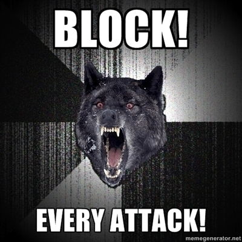

Prevenir Ataques de Novatos (invitado)
Durante este mes de aniversario tendremos el aporte de varios amigos que han aceptado amablemente enviar sus contribuciones a este post. Empezaremos con este interesante y muy útil artículo escrito por Daniel Molina Wegener (@damowe), arquitecto de software, gran programador, y autor de coder.cl.
¡Gracias Daniel! Los dejo disfrutando de este excelente post (al menos yo voy a revisar este sitio y aplicar algunos de estos consejos):
prevenir ataques de novatos
Soy programador, me gusta programar. Ese ha sido mi foco profesional durante muchos años. Me gusta tanto que ya manejo mas de 10 lenguajes de programación y actualmente trabajo en una empresa que usa mis servicios de programación en Assembler, C, C++, Haskell, Lisp, Python y Java. Mi preocupación no es sólo aprender lenguajes, hay un trasfondo teórico importante tras cada lenguaje, y muchas cosas no son puestas al azar y tienen un marco teórico importante en la Ciencia de la Computación, y muchas veces matemático. Finalmente, mi tercera preocupación es como organizar el desempeño de varios lenguajes dentro de una arquitectura determinada. Esto me lleva a un área de desarrollo de habilidades conocida como administración de sistemas.
Hace unos días atrás, se convocó la acción de Anonymous por medio de una de sus operaciones acá en Chile. Como tengo varios amigos que tienen servidores, frecuentemente recibo preguntas respecto a qué ocurrió con determinada página y cómo lograron cambiar la página original desde afuera. Creo que el 95% de los ataques a servidores son iguales. Un sujeto no muy habil usa servidores muy pobremente administrados fuera de su país de origen para lanzar ataques prefabricados por extranjeros — donde incluso se pueden ver las firmas en los desarrolladores de ataques en los requerimientos que hacen a los servidores — y tratan de explotar, típicamente, las extensiones instaladas en administradores de contenido, donde muchas veces son hechas por diseñadores y no programadores, con varios errores en la validación de datos usados por estas extensiones, como por ejemplo extensiones con capacidad de subir archivos con muy poco control.
El otro detalle es que el único beneficiado con la última acción de este tipo de acciones, donde muchos servidores no tienen relación alguna con los objetivos que lo convocaron — como un restaurante de sushi y sitios similares. El simple hecho de iniciar este tipo de ataques sobre sitios que no tienen relación alguna con el objetivo que convocó la operación me hace pensar que no son mas que crackers — para mi no son hackers, un hacker es un programador muy hábil o un especialista muy hábil en su area.
Pero evitar este tipo de ataques no es una tarea tan compleja, y creo que cualquier administrador de sistemas puede proteger sus servidores contra un número importante de este tipo de ataques y los desarrolladores a cargo de las plataformas pueden analizar el software que están usando para evitarlos. Cada sistema tiene alguna forma de ser protegido en alguna medida. No basta con tener un firewall, se deben considerar otros aspectos. A continuación voy a presentar algunos consejos para proteger servidores con software de libre disposición — principalmente servidores Linux y similares.

uploads y mod_rewrite
Si usted es de las personas que usa extensiones para administradores de contenido sin revisar el código que esta instalando, lo primero que debe realizar es revisar que directorios se utilizan para subir archivos en este gestor de contenido y que módulos esta usando el servidor para interpretar lenguajes. Si el servidor web cuenta con un interprete de PHP, pueden subir un shell remoto escrito en PHP que pueda servir como explorador remoto de archivos. Tomemos un ejemplo de un CMS que usa el directorio /uploads para almacenar los archivos subidos — como las imágenes.
ErrorDocument 404 "404 - : (" ErrorDocument 403 "403 - : (" <IfModule mod_rewrite.c> RewriteEngine On RewriteBase / RewriteCond %{REQUEST_METHOD} !^(HEAD|GET|OPTIONS|POST)$ RewriteRule (.*) [F,NS,L] RewriteCond %{REQUEST_FILENAME} ^.*uploads.*\.(py|php|pl|cgi|bin|sh)$ RewriteRule (.*) [F,NS,L] RewriteCond %{REQUEST_FILENAME} ^.*users.*\.(py|php|pl|cgi|bin|sh)$ RewriteRule (.*) [F,NS,L] RewriteCond %{REQUEST_FILENAME} !-f RewriteRule . /index.php [L] </IfModule>
En el ejemplo anterior, si los verbos HTTP son distintos a los 4 verbos que comúnmente usan los browsers (head, get, post y options), el servidor envía un error HTTP 403 y termina el requerimiento. Si pasa esta regla, revisa que si el requerimiento va dirigido al directorio que contenga uploads y aplica lo mismo a users, y éste no debe terminar con las extensiones py, php, pl, cgi, bin y sh, bloqueando cualquier script que sea puesto en este directorio. Finalmente permite cualquier requerimiento a archivos, y en caso contrario, direcciona el requerimiento a index.php. Con esto se evita el dolor de cabeza que implica instalar una extensión para administradores de contenido que estén mal programadas y que permitan subir archivos. Las directivas para documento de error reducen el tamaño de los documentos de error a unos cuantos bytes.
ataques comunes y mod_security
Los ataques prefabricados están en su mayoría cubiertos por modsecurity. Pero el conjunto de reglas básico no es suficiente, lo mejor para este módulo es usar el conjunto de reglas de pago, que se manejan a modo de suscripción suscripción que permite tener reglas comerciales actualizadas. Esto bloqueará un buen número de ataques, como _sql injection por ejemplo, principalmente esos ataques hacia bugs que aun no tienen fixes por parte de los fabricantes de software.
ataques DDoS y mod_evasive
Este módulo permite evitar que el servidor se sobrecargue con ataques del tipo DDoS bloqueando las direcciones IP que concurren en forma frecuente al servidor y no tienen el comportamiento típico de un usuario navegando — por ejemplo al hacer mas de 5 requerimientos simultáneos como lo hace un browser. El módulo mod_evasivebloqueará los requerimientos poco comunes protegiendo al servidor de requerimientos concurrentes como un synflood y similares.
bloquear escaneo de puertos
Bloquear el escaneo de puertos es bastante simple, en el servidor se debe omitir el uso de ciertos servicios. Por ejemplo esta claro que el protocolo FTP no se debe usar de ninguna manera. Sabiendo esto, podemos usar PortSentry para bloquear usuarios curiosos. Si el servidor es un servidor Web y el único servicio importante en el servidor hacia el público se da pos los puertos 80 HTTP y 443 HTTPS, podemos abrir los puertos 20 FTP, 21 FTP y 25 SMTP y dar el paso a PortSentry para que los vigile. De esta forma PortSentry bloqueará a los usuarios curiosos que estén husmeando el servidor donde no corresponde. Basta con que el usuario trate de conectarse al puerto 20 y 21 para que PortSentry lo deje bloqueado desde el firewall interno del sistema operativo, o también se podría integrar con otros sistemas de gestión de redes y bloquearlo desde el firewall externo.
fuerza bruta hacia SSH
Podemos bloquear los ataques de fuerza bruta hacia servidores SSH — y es recomendable que no se use el puerto 22 ya que este es frecuentemente escaneado por bots — usando algún monitor como DenyHosts. También es recomendable que se usen llaves con contraseñas extensas en lugar de contraseñas directas en el servidor y el acceso para el usuario administrador — como root y operator — sea bloqueado, donde los usuarios autorizados a entrar y administrar el servidor estén registrados como sudoers.
ofuscar JavaScript
Nunca dejes JavaScript dentro del HTML y ofusca todo el JavaScript del sitio centralizándolo dentro de uno o varios archivos. Hay varias herramientas que puedes usar para esto, como YUI Compressor. Esto evitará que el JavaScript pueda ser analizado por inexpertos, principalmente cuando el JavaScript permite realizar algunos ataques como XSS. Lo mismo aplica al CSS, puedes usar CSSTidy para comprimir el CSS de tu sitio. Esto hará que los inexpertos se pierdan por un buen rato.
que encontré en los servidores
En los servidores encontré muchos de estos ataques comunes y al menos los servidores que yo administro, donde aplico este software y similares, además de buenas prácticas administrativas, no sufrieron daño alguno. Una buena forma de filtrar el log de Apache, por ejemplo buscando ataques sobre un blog Wordpress, es ejecutar el siguiente comando sobre el log de acceso en apache:
grep POST access.empresa.log | sed '/wp-login/d; /wp-comments/d; /wp-cron/d; /trackback/d;'
Uno encuentra cosas interesantes con este comando, como por ejemplo esos ataques comunes a las extensiones Wordpress que permite la subida de archivos al blog, pero que pueden ser bloqueados con un par de reglas de mod_rewrite, como estos por ejemplo, que fueron ejecutados sobre un blog Wordpress:
XXX.XXX.XXX.XXX - - [30/Jul/2012:21:11:56 -0400] "POST //wp-content/plugins/ajax_multi_upload/upload.php HTTP/1.1" 403 23716 "-" "Mozilla/5.0 (compatible; Googlebot/2.1; +http://www.google.com/bot.html)" XXX.XXX.XXX.XXX - - [30/Jul/2012:21:12:04 -0400] "POST /wp-content/plugins/auctionPlugin/uploadify/upload.php HTTP/1.1" 403 23721 "-" "Mozilla/5.0 (compatible; Googlebot/2.1; +http://www.google.com/bot.html)" XXX.XXX.XXX.XXX - - [30/Jul/2012:21:12:12 -0400] "POST /wp-content/plugins/wpstorecart/php/upload.php HTTP/1.1" 403 23713 "-" "Mozilla/5.0 (compatible; Googlebot/2.1; +http://www.google.com/bot.html)"
La mayoría de los ataques se pueden prevenir con una buena configuración de los servidores y el conjunto de aplicaciones y módulos presentados acá están disponibles en los sistemas operativos como parte del sistema. Basta con instalarlos y usar el pago sugerido cuando corresponda.